25项属性：成员B已人工复核通过
成员B已于2026-11-23审查核查入口，并确认25项全部通过。原AI观察及适用条件保留。红框：匹配实例；黄线：选中实例分割边界。75个位置、52张不同图片。
工作报告 · 294行映射表
135 tight (fit) — 通过（成员B确认）
AI原初核：待确认。以下原观察及限制保留。
只表示贴合程度；需处理同实例tight/regular共现，禁止无规则转为互斥标签。
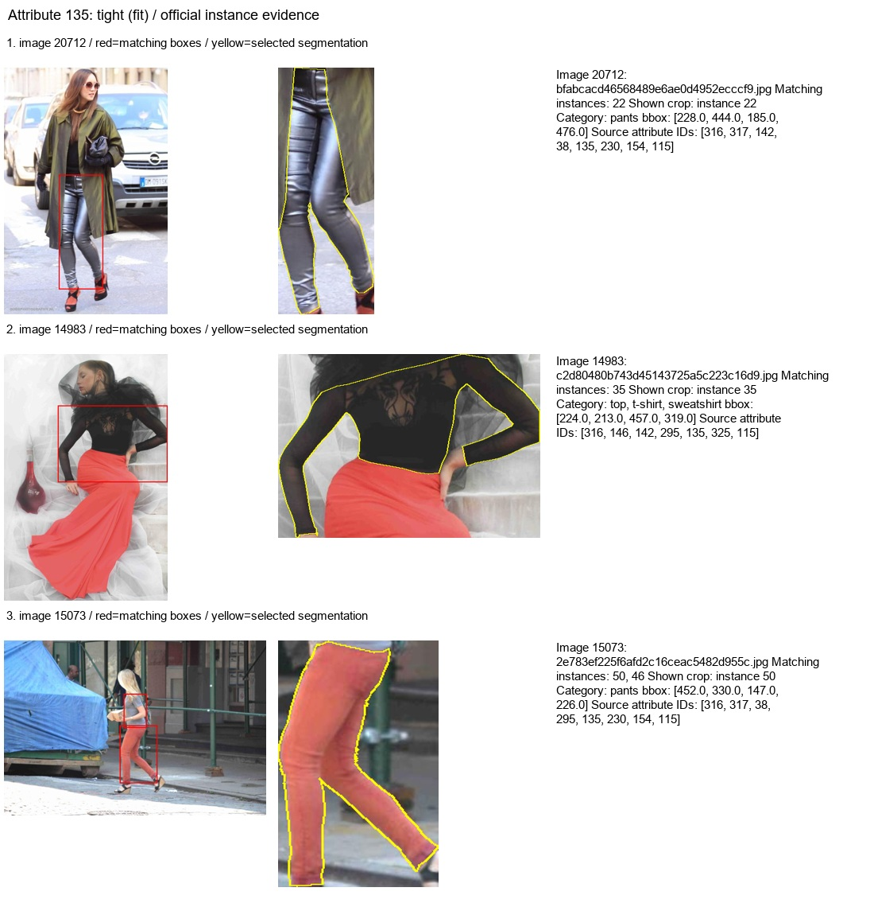
- image 20712 / instance 22：黑色长裤沿腿部紧贴，支持贴身版型。 打开原图
- image 14983 / instance 35：黑色蕾丝上衣腰身和手臂贴合。 打开原图
- image 15073 / instance 50：红裤贴腿；同一实例同时标135与136，互斥规则待定。 打开原图
136 regular (fit) — 通过（成员B确认）
AI原初核：待确认。以下原观察及限制保留。
regular与loose存在同实例共现，需明确互斥/多标签或冲突剔除策略。
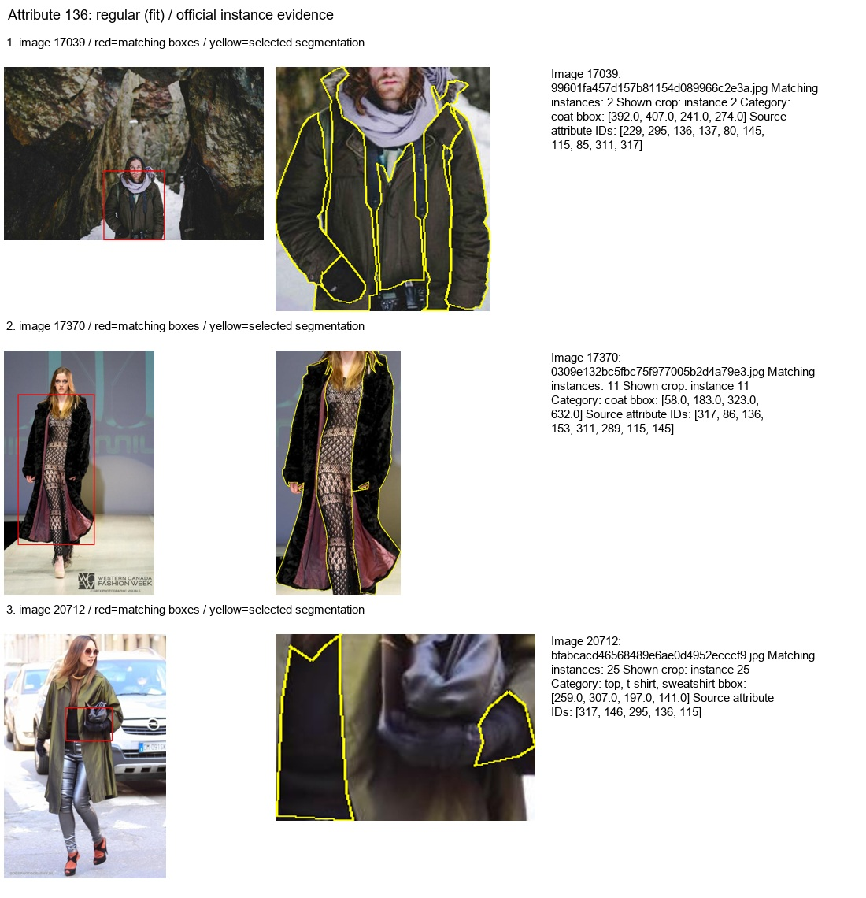
- image 17039 / instance 2：外套有余量且与137共同标注，不能确定regular/loose边界。 打开原图
- image 17370 / instance 11：敞开长外套叠穿，无法稳定判断贴合程度。 打开原图
- image 20712 / instance 25：内搭被外套和包遮挡，轮廓证据不足。 打开原图
137 loose (fit) — 通过（成员B确认）
AI原初核：待确认。以下原观察及限制保留。
同实例regular/loose共现，需明确冲突处理。
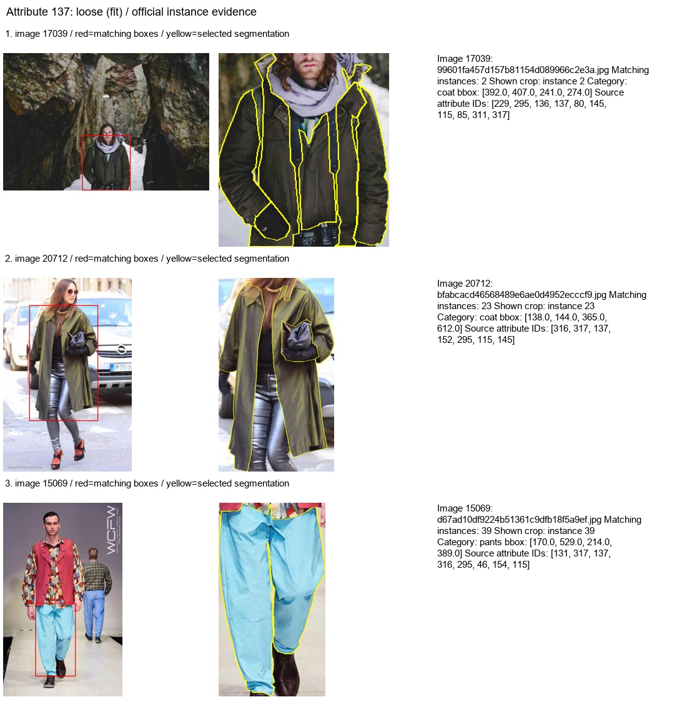
- image 17039 / instance 2：外套有余量，但同实例还标136。 打开原图
- image 20712 / instance 23：橄榄色外套敞开且衣身宽松。 打开原图
- image 15069 / instance 39：蓝色裤腿宽、有明显余量。 打开原图
156 sleeveless — 通过（成员B确认）
AI原初核：待确认。以下原观察及限制保留。
暂缓把sleeveless无条件映射为严格无袖；三个样本均与cap(sleeve)共同标注。
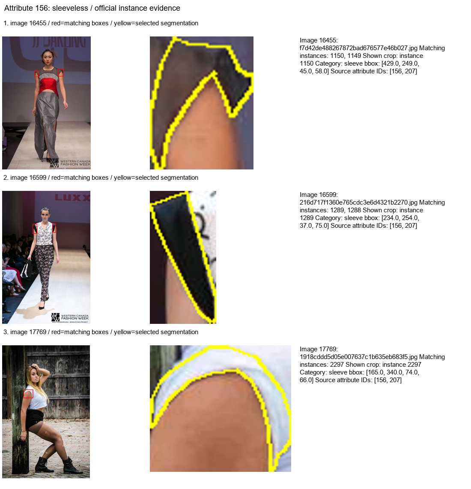
- image 16455 / instance 1150：肩部存在小袖片，且共同标207 cap(sleeve)，不支持严格无袖定义。 打开原图
- image 16599 / instance 1289：肩部短帽袖可见且共同标207，需澄清无袖边界。 打开原图
- image 17769 / instance 2297：白色短袖片/卷边可见且共同标207，不能直接当作完全无袖。 打开原图
157 short (length) — 通过（成员B确认）
AI原初核：待确认。以下原观察及限制保留。
官方验证集305条均为sleeve，支持袖长语义；短袖/及肘的姿态边界仍需人工约定。
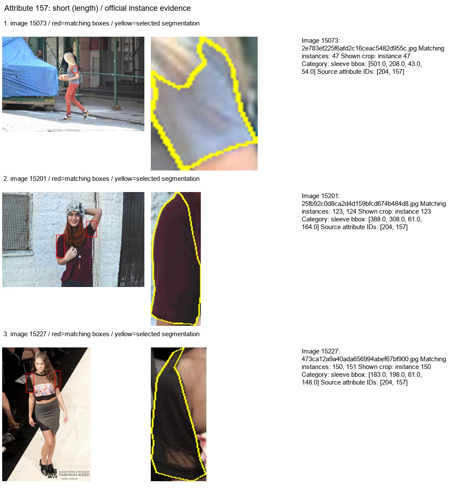
- image 15073 / instance 47：灰袖在肘上方结束；类别为sleeve。 打开原图
- image 15201 / instance 123：深色袖口近肘，弯臂使短袖/及肘边界不清。 打开原图
- image 15227 / instance 150：黑色网纱袖口近肘，需制定边界。 打开原图
158 elbow-length — 通过（成员B确认）
AI原初核：通过。以下原观察及限制保留。
仅适用于sleeve实例；肘附近，需能辨认袖口与肘位置。
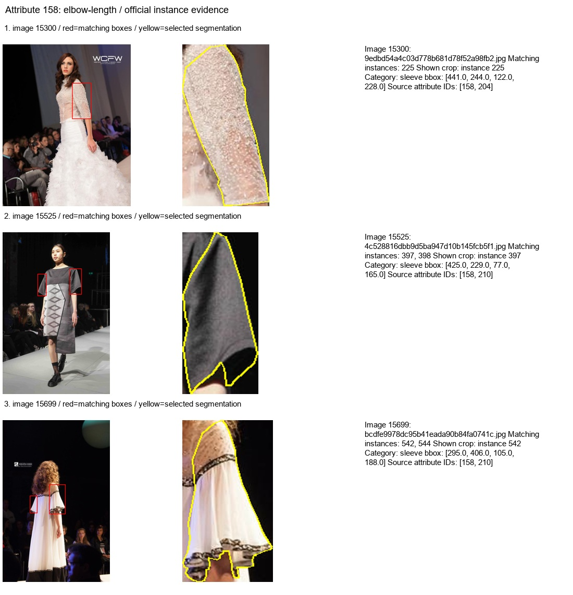
- image 15300 / instance 225：白色袖口在肘附近。 打开原图
- image 15525 / instance 397：灰色喇叭袖在肘附近结束。 打开原图
- image 15699 / instance 542：白色外扩袖在肘附近结束。 打开原图
159 three quarter (length) — 通过（成员B确认）
AI原初核：通过。以下原观察及限制保留。
仅适用于sleeve实例；肘以下腕以上；区分叠穿层，不由bbox比值直接判定。
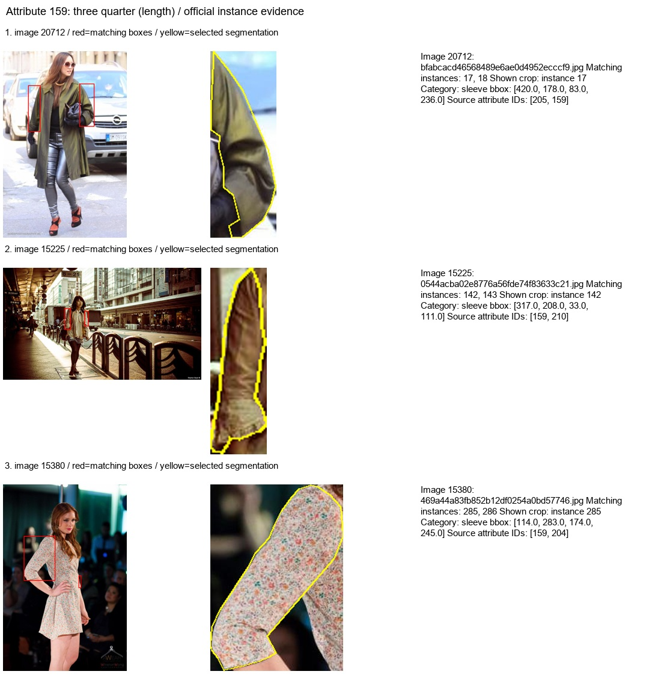
- image 20712 / instance 17：外套袖结束于前臂，黑色内袖更长；须区分叠穿层。 打开原图
- image 15225 / instance 142：浅色外扩袖在肘以下、腕以上结束。 打开原图
- image 15380 / instance 285：花纹袖在前臂结束。 打开原图
160 wrist-length — 通过（成员B确认）
AI原初核：通过。以下原观察及限制保留。
仅适用于sleeve实例；全验证集有1条neckline异常关联，必须排除；腕部遮挡时保留不确定。
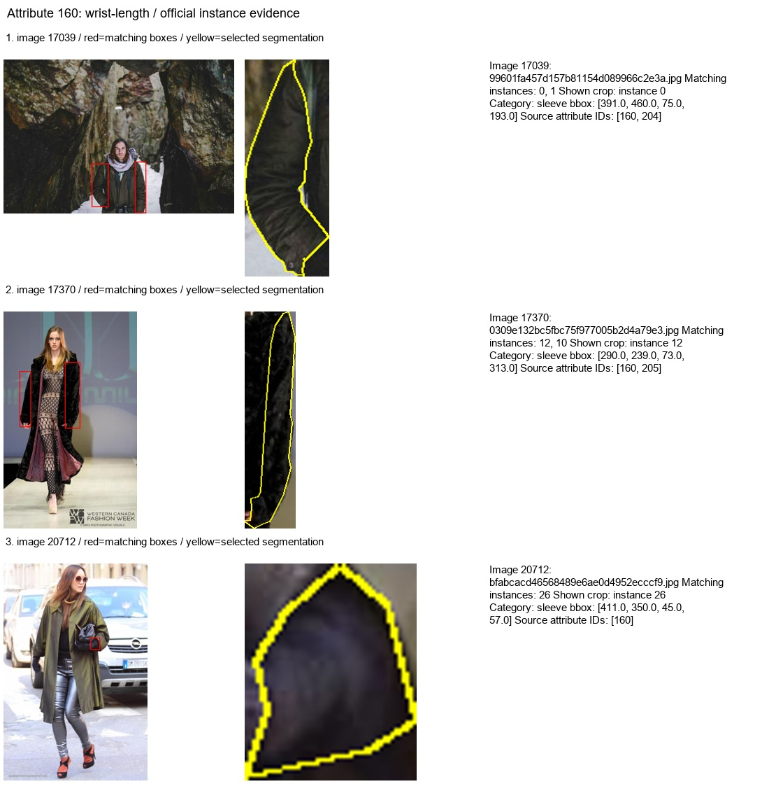
- image 17039 / instance 0：外套袖到腕/手部附近。 打开原图
- image 17370 / instance 12：黑色外套长袖到腕附近。 打开原图
- image 20712 / instance 26：内搭黑袖露出至腕；局部可见，需与外套袖区分。 打开原图
181 crew (neck) — 通过（成员B确认）
AI原初核：待确认。以下原观察及限制保留。
需与round/scoop/U建立统一可操作边界。
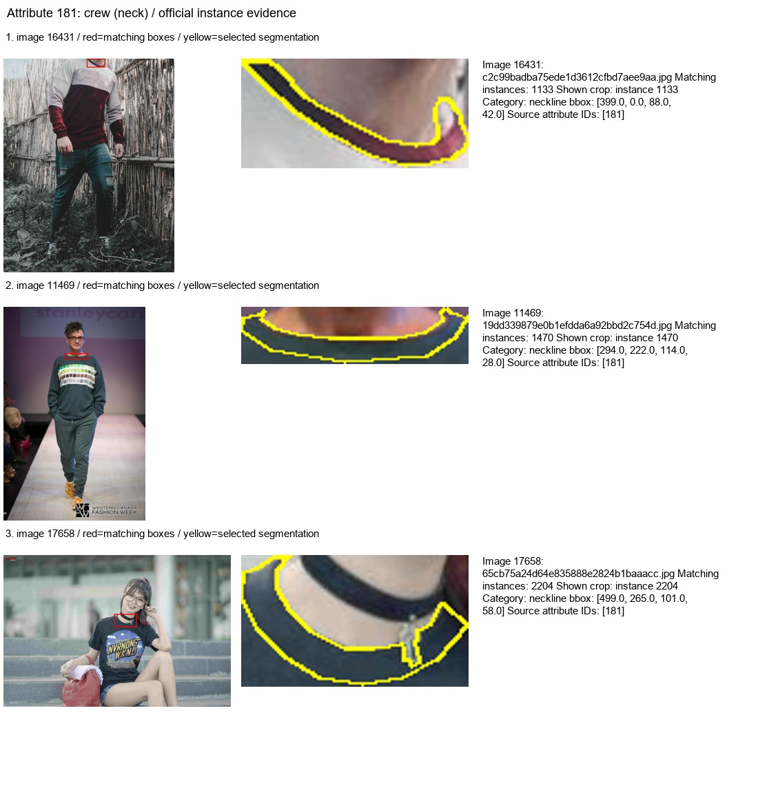
- image 16431 / instance 1133：高位圆弧领带可见。 打开原图
- image 11469 / instance 1470：深色高位圆领可见。 打开原图
- image 17658 / instance 2204：浅圆弧领可见但有叠层/饰物干扰。 打开原图
182 round (neck) — 通过（成员B确认）
AI原初核：待确认。以下原观察及限制保留。
不宜直接把crew/round/U/scoop合为相同细分类；低清样本不强判。
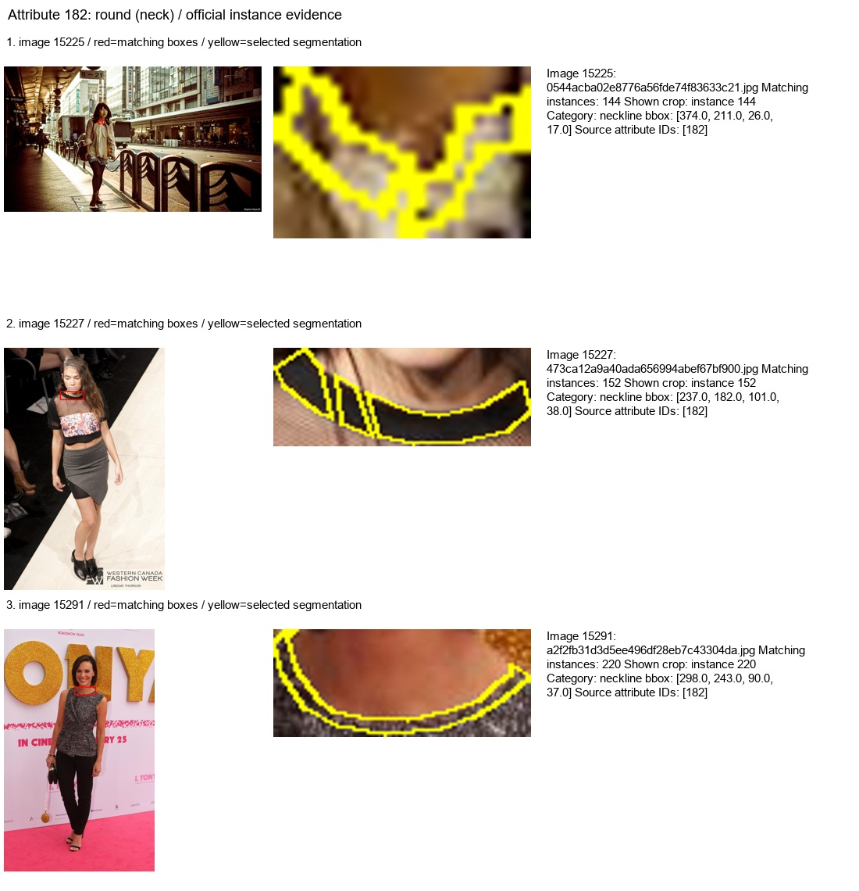
- image 15225 / instance 144：领部裁片仅26×17像素，形状难确认。 打开原图
- image 15227 / instance 152：黑色圆弧领口可见。 打开原图
- image 15291 / instance 220：宽圆弧领口可见，与U/scoop边界需约定。 打开原图
183 v-neck — 通过（成员B确认）
AI原初核：通过。以下原观察及限制保留。
限定neckline局部，V形两侧斜线可见；不从整图关联到别件衣服。
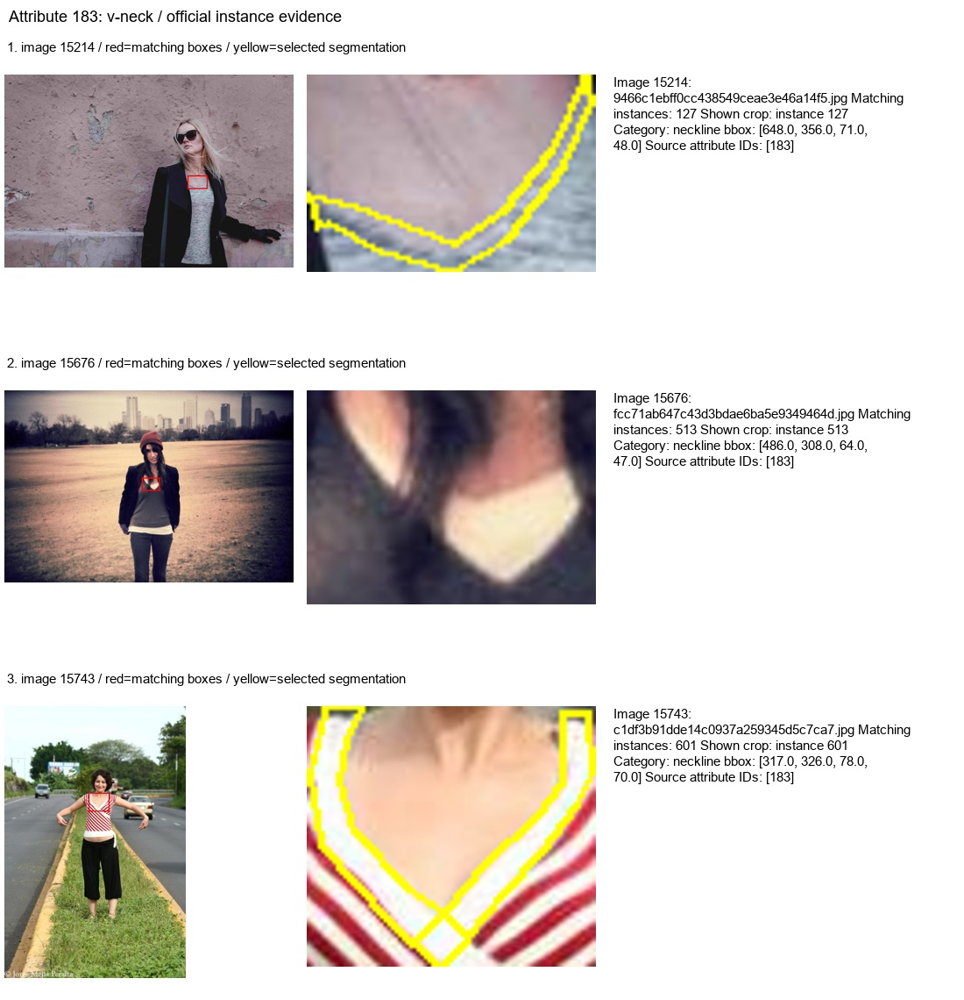
- image 15214 / instance 127：浅V领两侧斜线可见。 打开原图
- image 15676 / instance 513：深V轮廓可见，一侧有头发遮挡。 打开原图
- image 15743 / instance 601：条纹上衣V形领口清楚。 打开原图
186 u-neck — 通过（成员B确认）
AI原初核：待确认。以下原观察及限制保留。
需与round/scoop定义区别。
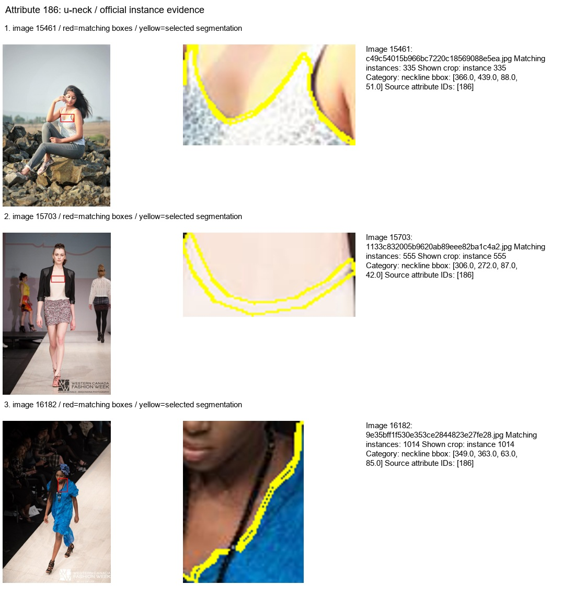
- image 15461 / instance 335：较深弧形U领可见。 打开原图
- image 15703 / instance 555：宽圆弧领，与round/scoop界限不清。 打开原图
- image 16182 / instance 1014：斜视角下深弧形领可见，边界需约定。 打开原图
189 boat (neck) — 通过（成员B确认）
AI原初核：通过。以下原观察及限制保留。
限定neckline：横向宽、浅、近水平；小裁片需人工复核。
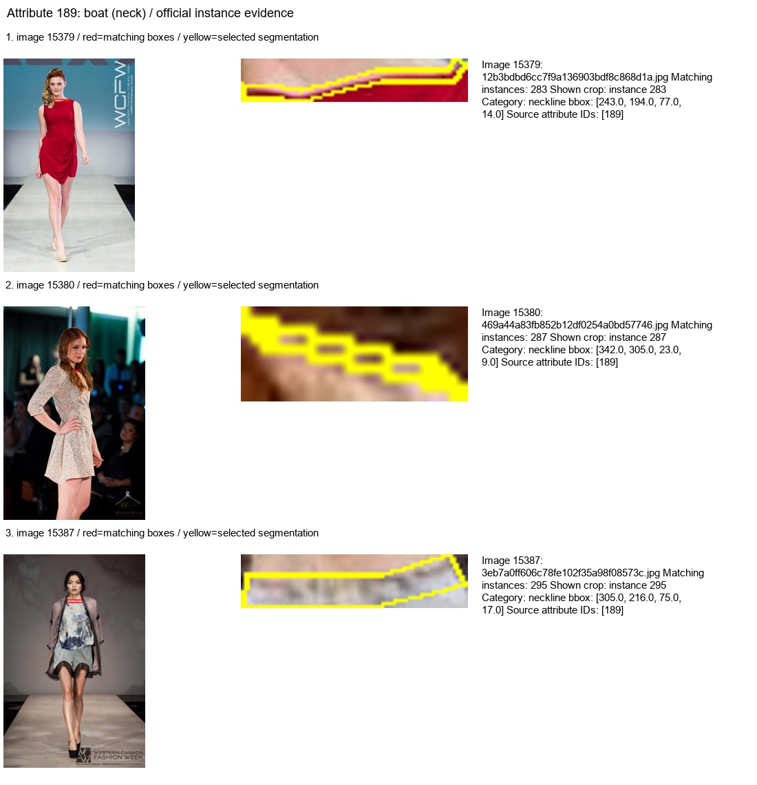
- image 15379 / instance 283：红衣领横向宽、弧度浅。 打开原图
- image 15380 / instance 287：花纹领横向宽浅，但裁片仅23×9像素。 打开原图
- image 15387 / instance 295：浅色领横向宽且接近水平。 打开原图
190 scoop (neck) — 通过（成员B确认）
AI原初核：待确认。以下原观察及限制保留。
样本与boat/round重叠，需要领深边界。
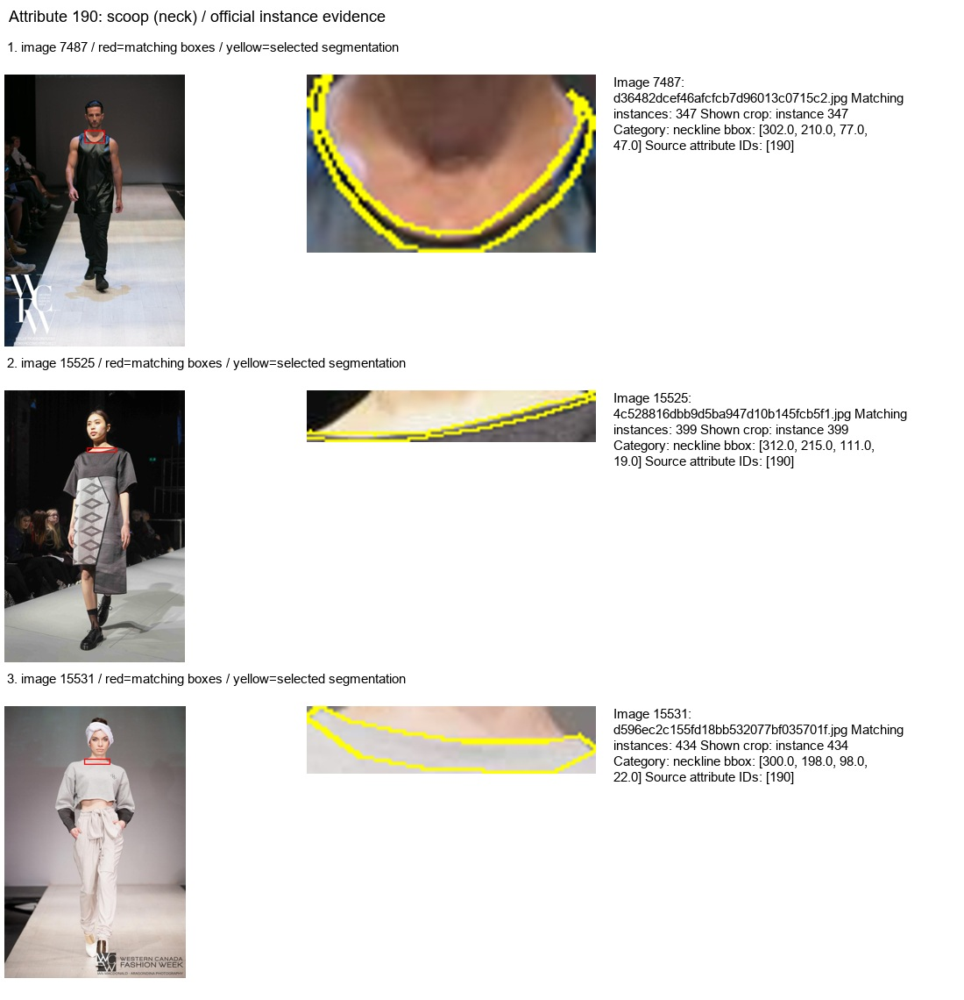
- image 7487 / instance 347：低位深圆弧领可见。 打开原图
- image 15525 / instance 399：领口偏浅、横向宽，与boat难区分。 打开原图
- image 15531 / instance 434：浅圆弧/横向领口，与round/boat边界不清。 打开原图
191 square (neckline) — 通过（成员B确认）
AI原初核：待确认。以下原观察及限制保留。
一例被遮挡，需替补清晰样本后再定。
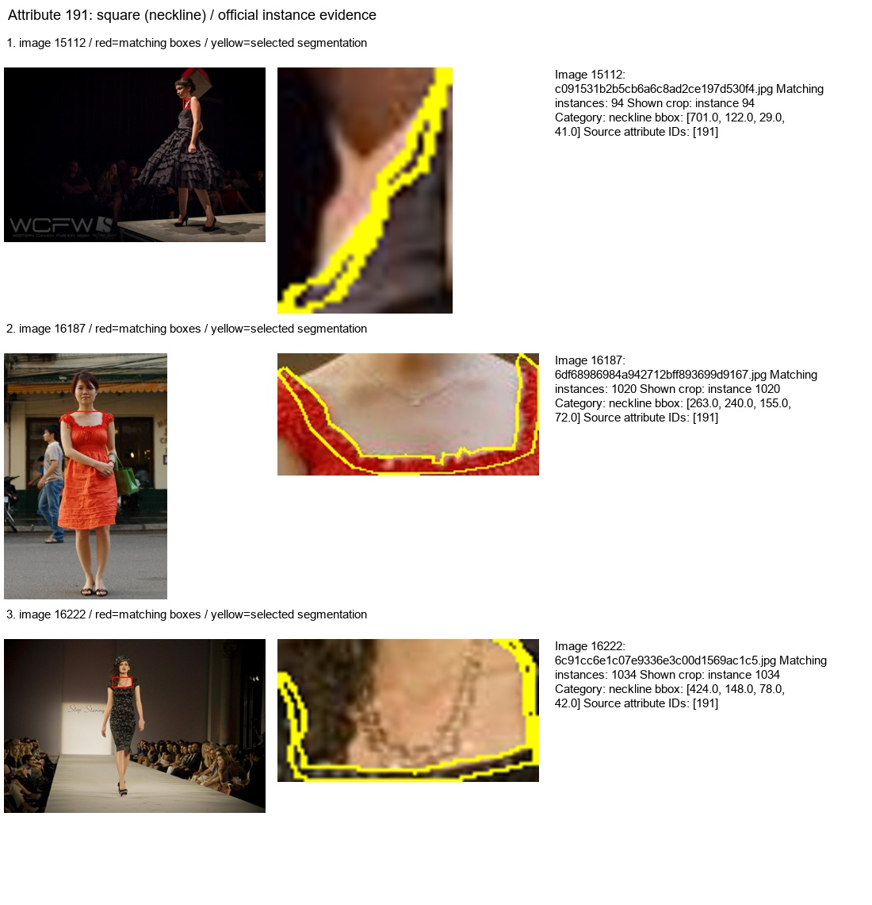
- image 15112 / instance 94：低光侧视加头发遮挡，不能确认方领。 打开原图
- image 16187 / instance 1020：红上衣领底较平、侧边有角。 打开原图
- image 16222 / instance 1034：深色上衣领底较平，支持方形轮廓。 打开原图
194 halter (neck) — 通过（成员B确认）
AI原初核：待确认。以下原观察及限制保留。
需确认带子绕颈/颈后结构；不能仅看正面U形。
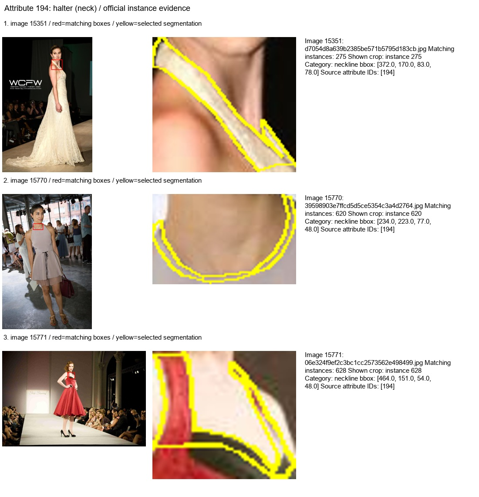
- image 15351 / instance 275：带子朝颈部集中，支持挂脖。 打开原图
- image 15770 / instance 620：正面呈宽U弧，颈后连接不可见。 打开原图
- image 15771 / instance 628：领带向颈部集中，但分辨率较低。 打开原图
198 turtle (neck) — 通过（成员B确认）
AI原初核：待确认。以下原观察及限制保留。
高领高度及折叠边界需明确；一个裁片低清。
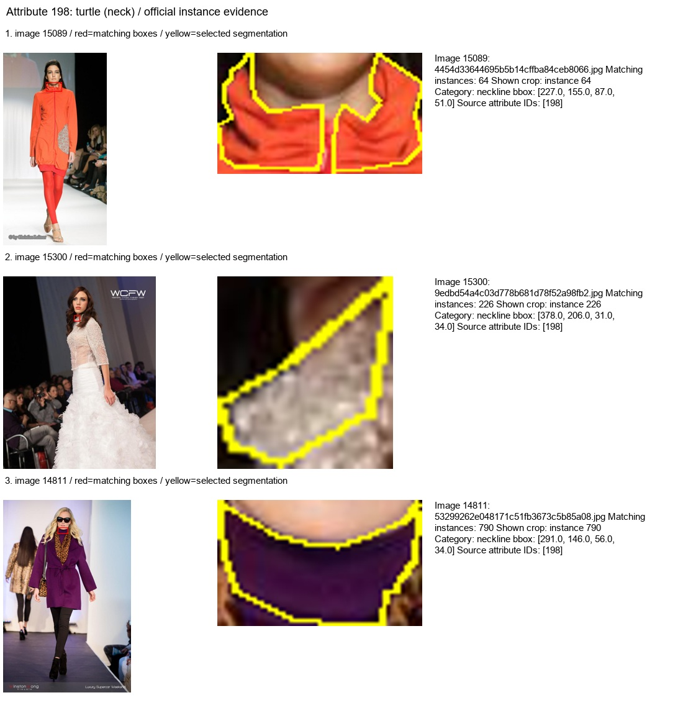
- image 15089 / instance 64：橙色领围住颈部且高起。 打开原图
- image 15300 / instance 226：浅色高领裁片31×34，细节不足。 打开原图
- image 14811 / instance 790：内搭深色领围颈高起，但部分遮挡。 打开原图
317 plain (pattern) — 通过（成员B确认）
AI原初核：待确认。以下原观察及限制保留。
仅对当前服装实例判断；plain可与letters等共同标注；小logo允许面积阈值尚未验证。
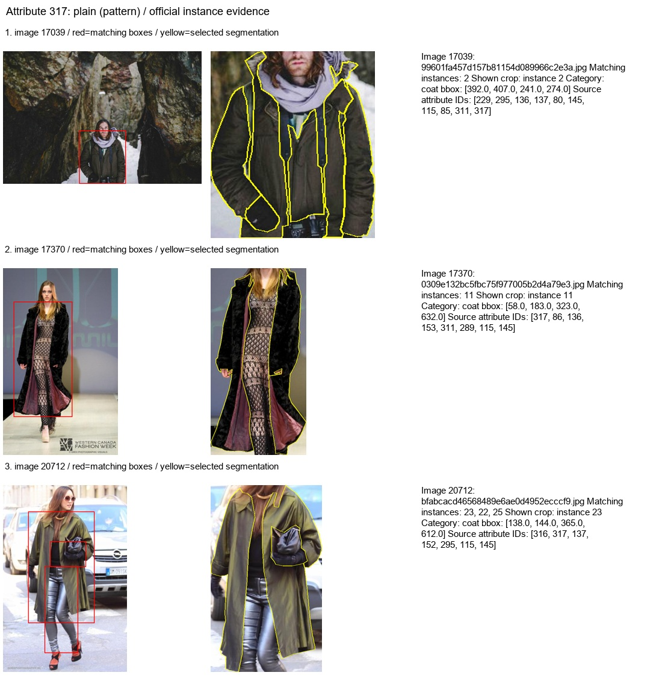
- image 17039 / instance 2：外套主体无明显重复图案，围巾属别的实例。 打开原图
- image 17370 / instance 11：黑外套无明显印花，内搭花纹不能归入外套。 打开原图
- image 20712 / instance 23：橄榄外套主体无印花，包遮挡局部。 打开原图
318 abstract — 通过（成员B确认）
AI原初核：待确认。以下原观察及限制保留。
抽象图案、混色面料、细纹的区别尚不清晰。
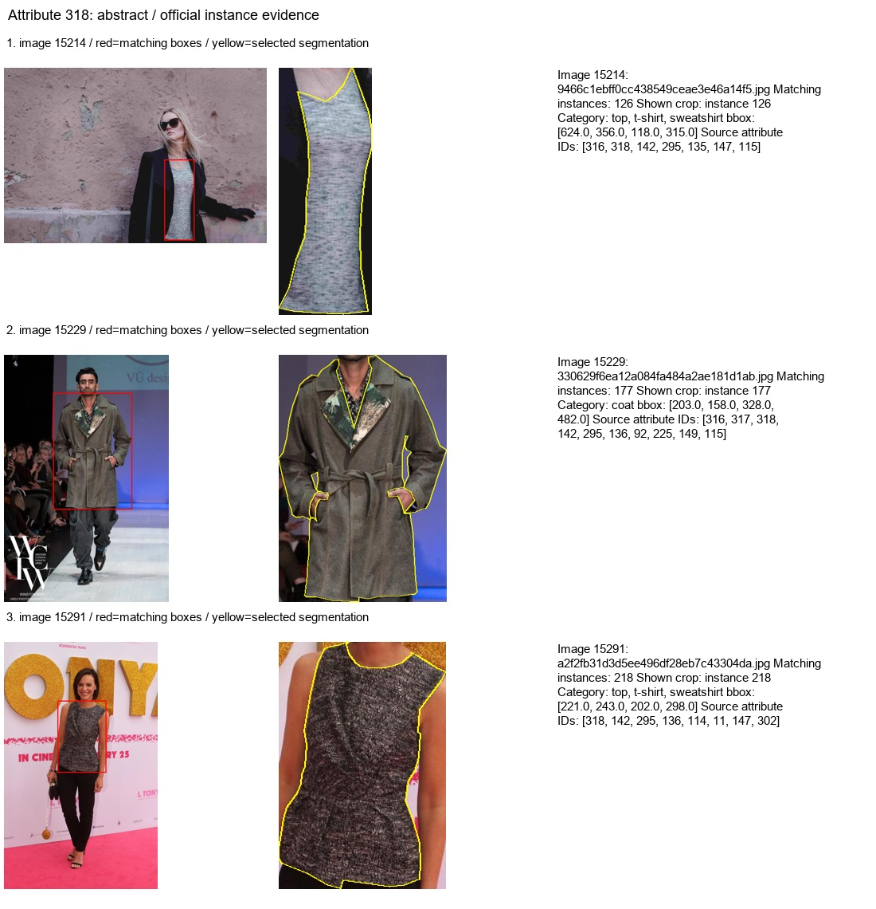
- image 15214 / instance 126：上衣灰色不规则细纹，抽象图案与织物纹理难区分。 打开原图
- image 15229 / instance 177：外套表面细纹且同时标plain，不能确定abstract定义。 打开原图
- image 15291 / instance 218：上衣密集不规则纹样，抽象范围需约定。 打开原图
319 cartoon — 通过（成员B确认）
AI原初核：待确认。以下原观察及限制保留。
卡通、图标、普通图形印花的界限需人工约定。
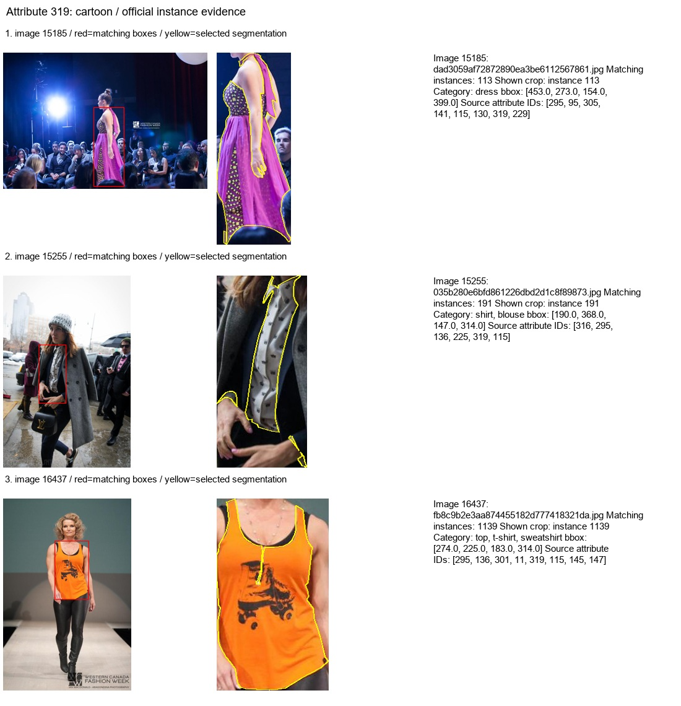
- image 15185 / instance 113：裙身重复小图案太小，难确认卡通内容。 打开原图
- image 15255 / instance 191：衬衫小图案分辨率不足。 打开原图
- image 16437 / instance 1139：上衣可见轮滑鞋图形，但图形印花与cartoon边界需约定。 打开原图
320 letters, numbers — 通过（成员B确认）
AI原初核：通过。以下原观察及限制保留。
仅文字/数字图案；不自动包括任意符号/图标；可与plain共存，不要求读出字词。
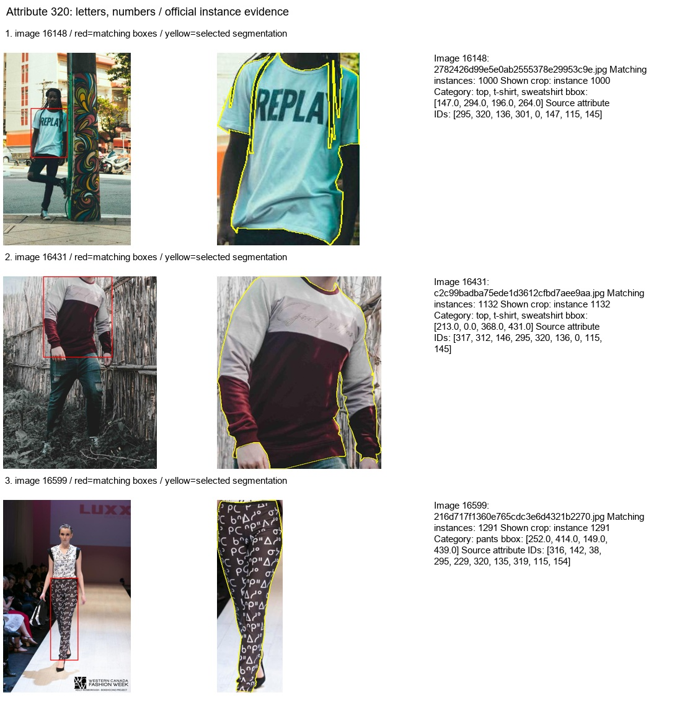
- image 16148 / instance 1000：上衣有大幅拉丁字母字样。 打开原图
- image 16431 / instance 1132：胸前有浅色手写字样；同时标plain，二者允许共存。 打开原图
- image 16599 / instance 1291：裤子有重复字母/符号；符号不自动归为文字数字。 打开原图
322 check — 通过（成员B确认）
AI原初核：待确认。以下原观察及限制保留。
两例格纹视觉证据不足，需补充清晰样本。
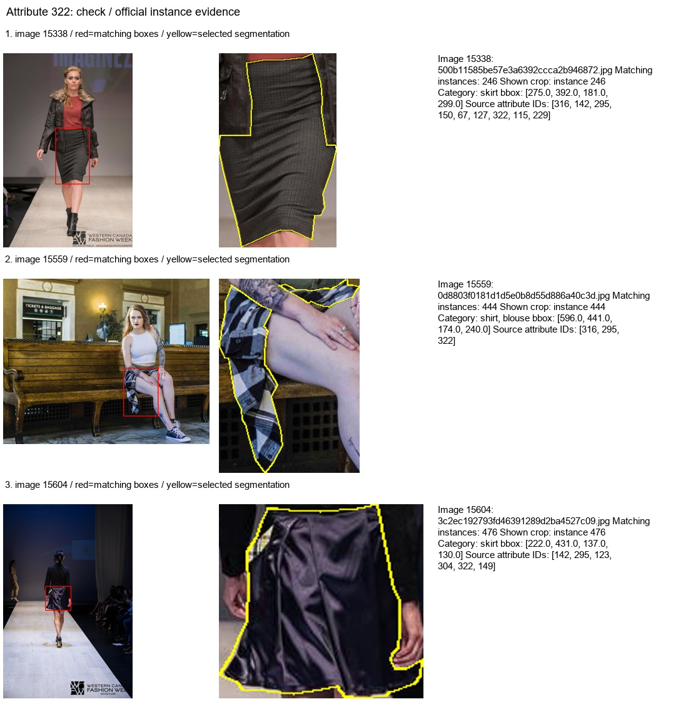
- image 15338 / instance 246：裙面细格纹不清晰，需原图放大。 打开原图
- image 15559 / instance 444：腰间系衬衫可见交叉格纹。 打开原图
- image 15604 / instance 476：深色裙面主要为反光褶皱，无法确认格纹。 打开原图
323 dot — 通过（成员B确认）
AI原初核：待确认。以下原观察及限制保留。
圆点和花形/圆形图案边界需约定。
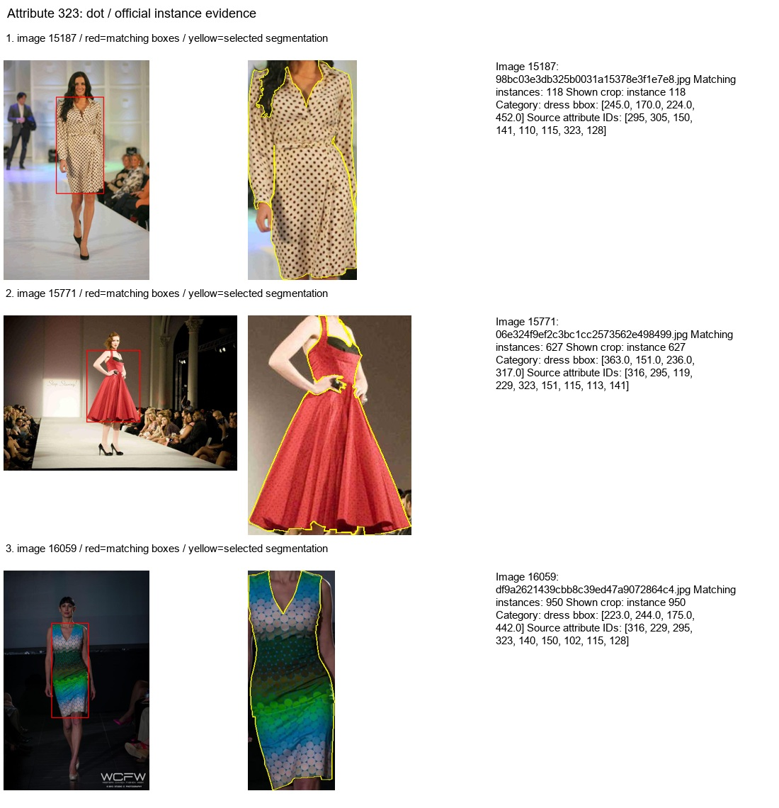
- image 15187 / instance 118：浅色裙上重复深色圆点清楚。 打开原图
- image 15771 / instance 627：红裙细点可见但较小。 打开原图
- image 16059 / instance 950：裙面有重复圆形/花形，dot边界需约定。 打开原图
325 floral — 通过（成员B确认）
AI原初核：通过。以下原观察及限制保留。
包含印花和蕾丝花卉；局部面板有花纹即可，不代表全件均匀花纹。
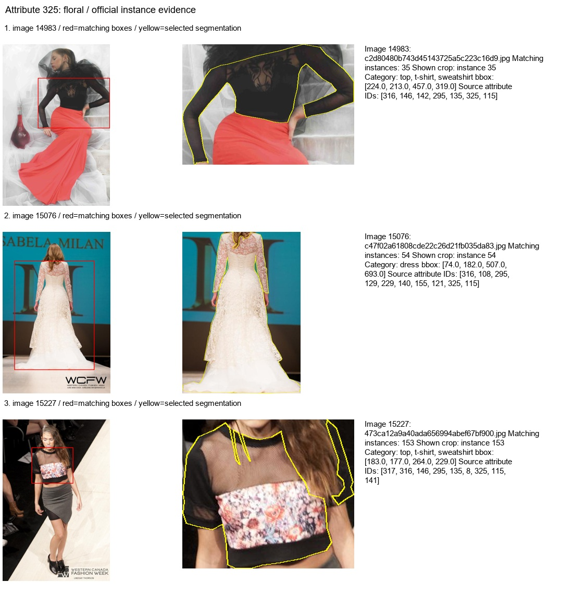
- image 14983 / instance 35：黑蕾丝上衣胸前可见花叶纹，包含蕾丝花纹。 打开原图
- image 15076 / instance 54：浅色婚纱可见花卉蕾丝纹。 打开原图
- image 15227 / instance 153：上衣中央面板可见花卉图案，不能把网纱部分当全件无花纹。 打开原图
328 stripe — 通过（成员B确认）
AI原初核：通过。以下原观察及限制保留。
包含横、竖、斜条纹；仅目标服装实例。
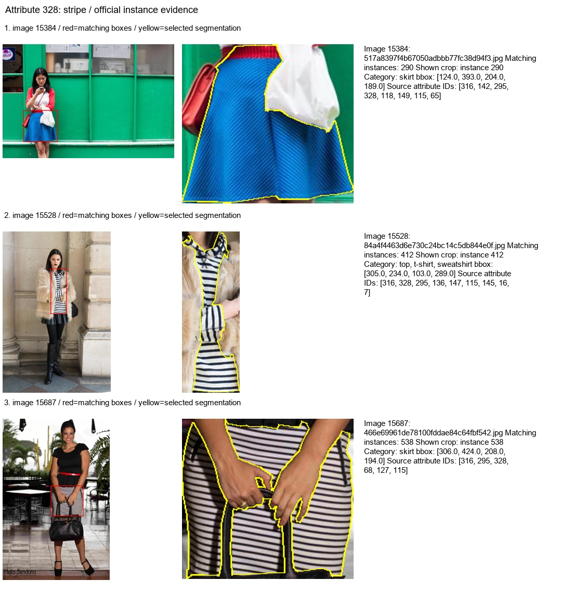
- image 15384 / instance 290：蓝裙斜向平行线可见，包含斜条纹。 打开原图
- image 15528 / instance 412：上衣横/竖平行条纹可见。 打开原图
- image 15687 / instance 538：裙身横向平行条纹可见。 打开原图